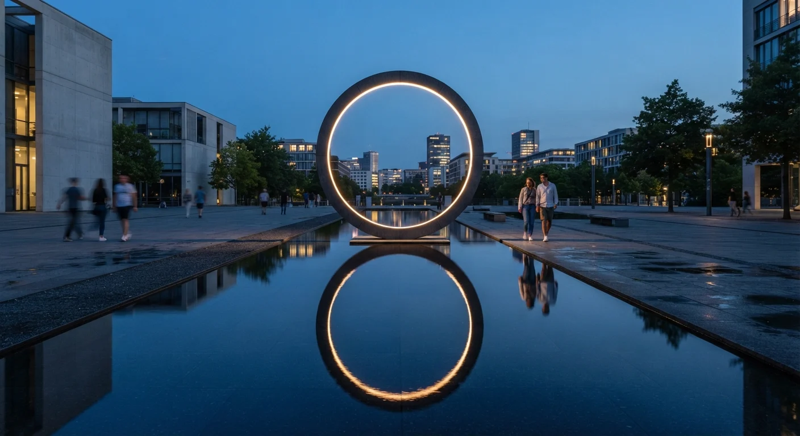

Monument je první věc, kterou si člověk z prostoru zapamatuje. Navrhujeme a stavíme velké světelné objekty na míru. Vznikají z kombinace 3D tisku, poctivých materiálů a chytré řízené LED techniky, která vydrží české počasí.
Lehký a přesný tvar s dutinou pro světlo. Libovolná geometrie bez drahých forem.
Leštěný plech, frézované dřevo, ocel nebo mléčné plexi podle charakteru místa.
Venkovní pásky s vysokým krytím IP, scény, přechody a reakce na pohyb.
Volitelně reproduktor, mikrofon a AI hlas. Monument pozdraví a provede.